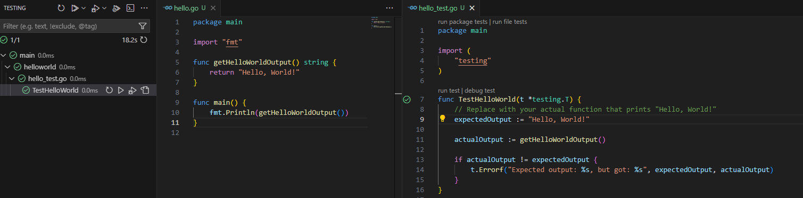
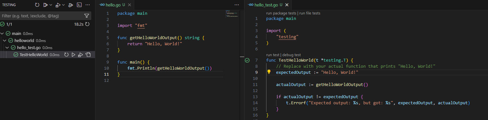

I've been learning Go(lang) slowly for a while now. As it has undeniable use cases for RestAPI and
microservices that I wanted to explore.
Tips
Create a new variable :=, assign to existing =
Install a package from Github: go get -u github.com/gin-gonic/gin
String interpolation fmt.Sprintf() or fmt.Printf
Example: fmt.Sprintf("Hello, %s!", name)
Installation
Go to Go's to get the installer (sentiment_very_satisfied):
https://go.dev/dl/
Run the installer...
Install the Go extension for VSCode
Basics / Go Concepts
Basic Commands
HelloWorld Example
Create a main.go by running go mod init main && go mod
tidy
Define a main() function
Use fmt.Println() to output to the console
Example code:
package main
import "fmt"
func main() {
fmt.Println("Hello, World!")
}
Results in:
PS C:\src> go run .\main.go
Hello, World!
Variables
var
Declares a variable
:=
Assigns a value to a variable
const
Declares a constant
int
Integer
float64
Float
string
String
bool
Boolean
ModulesA Go module is a collection of related Go packages
that can be versioned and shared with other
developers.
A module as a self-contained unit of code that can be
independently developed, tested, and distributed. It's a way to organize
and manage your Go code effectively. Modules are versioned, so you can
specify which version of a module you want to use in your code.
Use go mod init to create a new module
Use go mod tidy to clean up the module and remove unused
dependencies
Use go mod vendor to create a vendor directory. This is
useful if you want to
include dependencies in your project and not rely on the internet to
fetch them.
Improved dependency management: Easily add, remove, and update
dependencies.
Enhanced code organization: Structure your code into reusable modules.
Better reproducibility: Ensure consistent builds across different
environments.
Facilitates package sharing: Share your code with others as a module
Compiling & Debugging
From a terminal
Run go build to compile your code and create .exe!
Run go test to test your code
Run go run to run your code
From VSCode
Press F5 to run your code
Press Ctrl+Shift+D to debug your code
Press Ctrl+Shift+T to run your tests
Testing
Use the testing package
Write tests in a file named main_test.go
Example Test for a function named HelloWorld():
package main
import (
"testing"
)
func TestHelloWorld(t *testing.T) {
// Replace with your actual function that prints "Hello, World!"
expectedOutput := "Hello, World!\n"
// Replace with the actual function call to get the output
actualOutput := getHelloWorldOutput()
if actualOutput != expectedOutput {
t.Errorf("Expected output: %s, but got: %s", expectedOutput, actualOutput)
}
}
Use the go test command to run your tests

Building a microservice that returns the weather
Create package to accept the HTTP calls and make the weather calls to
OpenWeatherMap.
Install dependencies: go mod init main && go mod tidy
Test it works:
go run .\weather.go
PS C:\src> (invoke-webrequest http://localhost:8080/weather/portland?unit=metric).Content
Clouds
PS C:\src> (invoke-webrequest http://localhost:8080/weather/lasvegas?unit=imperial).Content
Clear
Create Docker to run the service
Create dockerfile:
# Use a Golang image
FROM golang:1.20-alpine
WORKDIR /app
# Copy go modules to the working directory
COPY go.mod go.sum ./
# Download any dependencies
RUN go mod download
# Copy the rest of the application code
COPY . .
# Build the Go application
RUN go build -o main .
# Expose port 8080
EXPOSE 8080
# Command to run when the container starts
CMD ["./main"]
go get -u github.com/gin-gonic/ginfmt.Sprintf()orfmt.PrintfExample:
fmt.Sprintf("Hello, %s!", name)go mod init main && go mod tidypackage main import "fmt" func main() { fmt.Println("Hello, World!") }Results in:
go mod initto create a new modulego mod tidyto clean up the module and remove unused dependenciesgo mod vendorto create a vendor directory. This is useful if you want to include dependencies in your project and not rely on the internet to fetch them.Module example:
module example.com/mymodule require ( golang.org/x/net/context v1.0.0 )go buildto compile your code and create .exe!go testto test your codego runto run your codetestingpackageExample Test for a function named HelloWorld():
package main import ( "testing" ) func TestHelloWorld(t *testing.T) { // Replace with your actual function that prints "Hello, World!" expectedOutput := "Hello, World!\n" // Replace with the actual function call to get the output actualOutput := getHelloWorldOutput() if actualOutput != expectedOutput { t.Errorf("Expected output: %s, but got: %s", expectedOutput, actualOutput) } }go testcommand to run your tests
OpenWeatherMap endpoint:
https://api.openweathermap.org/data/2.5/weather?q=<CITY>&appid=<APIKEY>&units=<UNITS>
go get -u github.com/gin-gonic/ginweather-microservice-go-gin (Github)
go mod init main && go mod tidydocker build -t weather-microservice-gin .